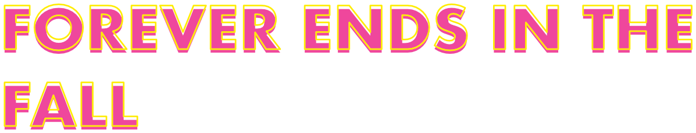
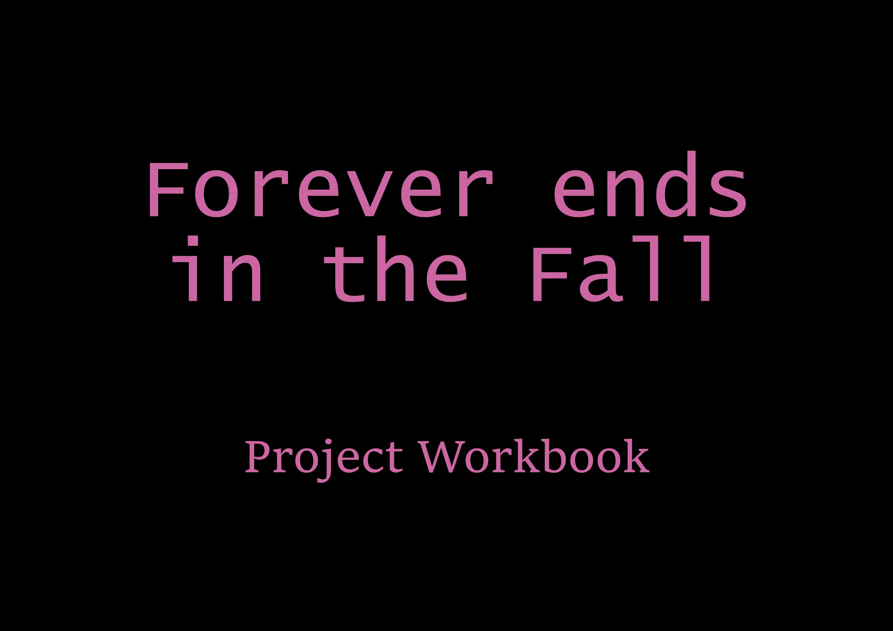

Stories, don't you love them? I sure do. I especially love when I get the opportunity to take my TTRPG characters and give them a little comic. That's what this project, Forever ends in the Fall, is all about! It's a short comic about the tragic love story of my V:TM character Owen and his only lover Jean. With this project, I aimed to capture the feeling of budding love and the sadness of losing it, showing it through the flower and the changing of the seasons leading up to the tragic event. (P.S, if you're wondering why the Autumn season is referred to as 'Fall', it's because this character is from North America.)
Skills utilised for this project: Character design - Illustration - MediBang - Photoshop - Affinity - Layout
The Forever ends in the Fall zine
Click to read through the graphic novel
Project workbook
Click the page, or use Next and the left and right arrow keys, to read through how I created my short graphic novel about the tragic love story of Owen and Jean.
